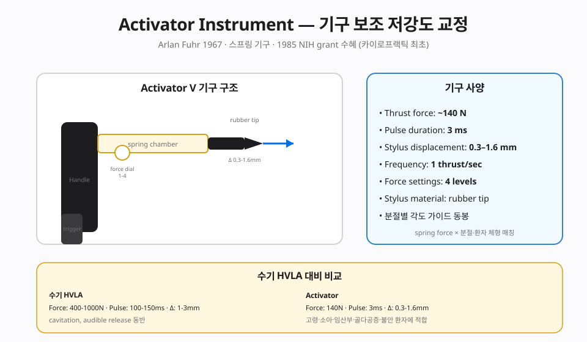
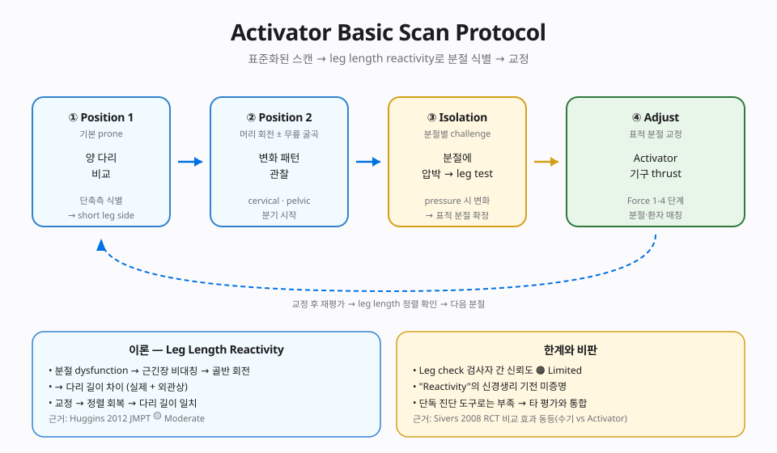

📊 핵심 다이어그램
이 챕터의 핵심 개념을 시각화한 도식.


📘 편집 원칙
근거 기반 의학(EBM) 관점. Vitalism · 전신질환 인과론 · AK 진단 확장 · Cranial rhythm 등 No evidence 주장은 🔴 제외 또는 비판적으로만 언급합니다.
개요
본 챕터가 다루는 기법
Activator Instrument (스프링 구동, 140N·0.3-1.6mm 변위) + Leg Length Reactivity 기반 Basic Scan Protocol. 1985 NIH grant 수혜(카이로프랙틱 최초) — 150+ peer-reviewed 연구.
📌 창시자 Arlan W. Fuhr 사진은 Chapter 1 · 창시자 갤러리 참조.
근거 수준 한눈에
근거
🟡 Moderate — 수기 SMT와 동등 효과 (Huggins 2012 JMPT SR)
이론·기전 — 기구 공학과 신경 자극
모든 카이로프랙틱 기법은 Afferentation → 중추 처리 → Efferentation 프레임(Chapter 2 참조)에서 해석합니다. Activator는 정밀 기구로 짧고 빠른 기계 자극(impulse)을 만들어 관절 낭의 mechanoreceptor를 선택적으로 활성화하는 것이 핵심.
1. 기구 개발 배경 — 수기 한계의 공학적 해결
AAI는 수기 교정(HVLA)의 두 한계 — 술자 간 재현성 부족과 환자의 방어적 근수축 — 을 공학적으로 해결하기 위해 1967년 Arlan Fuhr와 W.C. Lee가 치과용 임팩터(impactor) 원리를 척추 교정에 도입해 개발. 최소한의 힘으로 최대한의 신경학적 반응을 유도하는 모델.
2. 충격량의 물리 — Force vs. Impulse vs. Loading rate
교정 효과는 단순 '힘'이 아니라 충격량(Impulse)과 부하 속도(Rate of loading)에 의해 결정됩니다.
| 파라미터 | 값 | 임상적 의의 |
|---|---|---|
| 추력 지속 시간 (Thrust duration) | 3 ~ 5 ms | 골격근 방어 반사(54~70 ms)보다 10~20× 빠름 — 환자가 긴장하기 전 에너지 전달 완료 |
| 최대 힘 (Peak force) | 100 ~ 140 N (max < 200 N) | 수기 HVLA(400~1,000 N)보다 현저히 낮으나, 가속도가 매우 높아 (F = ma) 에너지 전달 효율은 동등 이상 |
| 분절 변위 (Segmental displacement) | 0.3 ~ 1.6 mm | 관절 낭 내 기계수용기 — 특히 Pacinian corpuscle — 선택적 자극 → 중추 Afferent 입력 극대화 |
3. 세대별 기구 (Generations)
- Activator I & II — 수동 스프링, 기본 임펄스 제공
- Activator IV — 4단계 힘 조절 시스템 도입
- Activator V (Electronic) — 디지털 제어 + 'Wave of Pressure' 기술. 조직 저항 감지 → 일정 깊이 자동 전달. 무선 충전·인체공학 그립
Activator IV 설정(Setting) 가이드
| Setting | 적용 부위 | 비고 |
|---|---|---|
| 1 (최저) | 경추 상부, TMJ, 영유아 | 가장 약한 강도 |
| 2 | 경추 하부, 흉추 상부, 사지 관절 | |
| 3 | 흉추 하부, 요추 | |
| 4 (최고) | 골반·천장관절·대근육군 | 가장 강한 강도 |
Basic Scan Protocol — Leg Length Reactivity (LLR)
진단의 핵심. 단순 다리 길이 측정이 아닌, 부하(provocation)에 대한 신경-근 반응 평가 과정.
1. 다리 길이 분석(LLA)의 이론
신경학적 가설 (🟡 contested — 비판적 시각 섹션 참조)
척추 분절의 기능 이상(subluxation)이 뇌간 망상체(reticular formation)에 영향을 미쳐 하지 근긴장(tone) 변화를 유발 → 실제 골 길이 차이가 아닌 기능적 짧은 다리(functional short leg)로 나타난다는 가설.
주의: 이 가설의 기계적 인과 모델은 직접 영상·전기생리 검증이 부족합니다. 임상에서는 진단 보조 수단으로만 활용하고, 영상·신경학적 검사로 보완해야 합니다.
2. 환자 자세 (Patient Positioning)
- 복와위(prone), 안면 구멍(face piece)에 얼굴 정확히 위치
- 표준화된 신발(현저한 마모 없음) 착용 상태로 측정
- 술자는 환자 발 끝에 서서 양측 발뒤꿈치(heel) 정렬을 비교
3. Knee Flexion Test — Position 1 / Position 2
Position 1 (다리 신전): 다리를 편 상태에서 길이 비교. 짧은 쪽 = PD Leg.
Position 2 (무릎 90° 굴곡): 다리 길이 변화 관찰.
패턴 해석
- Pos 2에서 PD leg가 길어짐 → 무릎·발 기원 가능성
- Pos 2에서도 PD leg가 짧음 → 골반(SI joint) 기원
4. Isolation Tests — 부위별 유발 검사
4.1. 골반 · 요추 (Pelvis & Lumbar)
| 분절 | 환자 동작 (Provocation) | 관찰 |
|---|---|---|
| L5 | PD 쪽 손을 요추(LS junction) 위에 올림 | LLR 변화 |
| L4 | Non-PD 쪽 손을 요추 위에 올림 | LLR 변화 |
| L2 | 양손 모두 요추 위에 올림 | LLR 변화 |
4.2. 흉추 (Thoracic)
- T8 ~ T12: 팔을 머리 위 또는 등 뒤로 순차적으로 동작 → 하부·중부 흉추 분절 고립
- T1 (상부 흉추): 양 어깨 으쓱(shoulder shrug)
4.3. 경추 (Cervical)
| 분절 | 환자 동작 |
|---|---|
| C7 | 양쪽 어깨 후방 후퇴(retraction) |
| C2 | 고개를 PD 쪽으로 회전 |
| C1 (Atlas) | 고개를 Non-PD 쪽으로 회전 |
| Occiput | 턱을 가슴으로 당김(chin tuck) |
임상 적용 — Adjustment Procedures
진단된 분절에 가장 효율적으로 에너지를 전달하기 위한 술자 자세와 기구 적용법.
1. 교정의 3대 원칙
- Contact Point (접촉점): 정확한 해부학적 지점(SP·TP·lamina 등)에 기구 팁(stylus) 배치
- Line of Drive (LOD): 관절 면(facet orientation) 방향에 일치시켜 추력 벡터 설정
- Pre-stress (압박): 추력 전 피부 슬랙(skin slack) 제거 + 관절면 밀착 → 반동(rebound) 최소화
2. 부위별 교정 상세
2.1. 골반 (Pelvis · 천장관절)
| 병변 패턴 | Contact Point | LOD (추력 방향) |
|---|---|---|
| PI Ilium | PSIS의 상내측면 | 전방 + 상방 (Anterior & Superior) |
| AS Ilium | 좌골 결절 (Ischial tuberosity) | 전방 + 하방 (Anterior & Inferior) |
2.2. 요추 (Lumbar Spine)
- Contact: 해당 분절의 Mammillary process (병변 측)
- LOD: 전방 + 약간 상방, 후관절면(facet) 각도에 수직
2.3. 흉추 (Thoracic Spine)
- Contact: 해당 분절의 TP
- LOD: 전방 + 하방 + 약간 내측. 늑골과의 관계 고려해 신중히 컨택
2.4. 경추 (Cervical Spine)
| 분절 | Contact | LOD |
|---|---|---|
| C2 ~ C7 | 해당 분절 lamina 또는 articular pillar | 전방 + 상방, 환자 반대측 눈을 향함 |
| C1 (Atlas) | 하악각(angle of mandible) 뒤쪽 Atlas TP | 외측 → 내측 (directly medial) |
3. 교정 후 재평가 (Post-check)
교정 직후 동일한 유발 검사를 재수행해 LLR 불균형 해소를 확인. 미해소 시 다음을 단계적으로 점검:
- 컨택 지점 재검토 (TP·lamina 정확도)
- LOD 각도 재조정
- Setting 강도 재설정
- 분절 진단 자체 재검토 (다른 레벨일 가능성)
근거 수준
| 적응증 | 근거 수준 | 비고 |
|---|---|---|
| 본 기법 주된 적응증 | 🟡 Moderate — 수기 SMT와 동등 효과 (Huggins 2012 JMPT SR) | 상세는 강의록 MD 참조 |
| 🔴 전신질환·내장·자폐·ADHD·천식·고혈압 치료 | 🔴 No evidence | Cochrane·PubMed 근거 없음 |
🔴 비판적 시각
Leg Length 분석의 과학적 한계
MMT·LLR이 기능적 병변을 정확히 반영하는지는 논쟁적. 🟠 LLR 신뢰도는 훈련 술자에서 moderate. 단, 기구 자체의 기계적 효과는 🟡 Moderate evidence. 고령·소아·임산부 안전성은 🟢.
상세 비판 문헌 리뷰와 과장 vs 근거 비교표는 강의록 MD 확장판에서 다룹니다.
📌 임상 팁 · 환자 교육
1. 속도가 생명
기구가 흔들리지 않는 안정적 파지법 필수. 추력 순간 손목·팔의 미세 움직임이 임펄스 효율을 떨어뜨립니다.
2. Pre-load 압력의 일정성
매번 동일한 약 10~20 N의 pre-load를 가해야 LLR 변화 비교(진단)의 객관성이 확보됩니다. 슬랙 제거 + 관절면 밀착이 핵심.
3. 환자 교육 — "딱" 소리에 대한 안내
"딱" 소리는 뼈가 부딪히는 소리가 아니라 기구 내부의 스프링 작동음임을 사전에 설명하면 환자의 불안과 방어적 근수축이 감소합니다.
⚠️ 안전 주의 (Safety)
저강도이므로 고령·소아·임산부에서도 비교적 안전(🟢)하나, 진행성 골다공증·척추 종양·감염·미진단 외상 등은 일반적 척추 도수의 금기와 동일하게 적용. 영상 검사로 적응증·금기 우선 판별이 필수입니다.
강의 자료
11/11 자료 준비 완료.
📖 강의록
🎧 팟캐스트
🎥 AI 동영상
🎴 PPTX 슬라이드 (4개 × 15장)
15장 🎴Part 2 · Aff/Def/Eff ✅ 준비 완료
15장 🎴Part 3 · Assessment ✅ 준비 완료
15장 🎴Part 4 · 임상·비판 ✅ 준비 완료
15장
📄 Report Markdown
NotebookLM 자동 생성 📄Report 2/4 ✅ 준비 완료
NotebookLM 자동 생성 📄Report 3/4 ✅ 준비 완료
NotebookLM 자동 생성 📄Report 4/4 ✅ 준비 완료
NotebookLM 자동 생성
NotebookLM 노트북: 열기 →
🎬 레거시 시연 영상 (사용자 직접 시연)
2015년 KOA 학회 및 임상 시연 당시 사용자가 촬영한 원본 영상입니다. 참고용 · 직접 시연 중심이므로 이론 설명은 챕터 본문을 참고하세요.